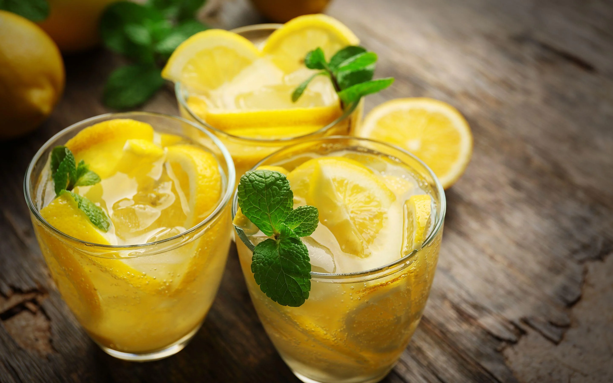

Lemonade
Prep time:
10 mins
Yeild:
1
Ingredients
3 Unwaxed Lemons (roughly chopped)
140 grams Caster Sugar
1 liter Cold Water
Method
Tip the lemons, sugar and half the water into a food processor and blend until the lemon is finely chopped.
Pour the mixture into a sieve over a bowl, then press through as much juice as you can. Top up with the remaining water and serve with plain ice.